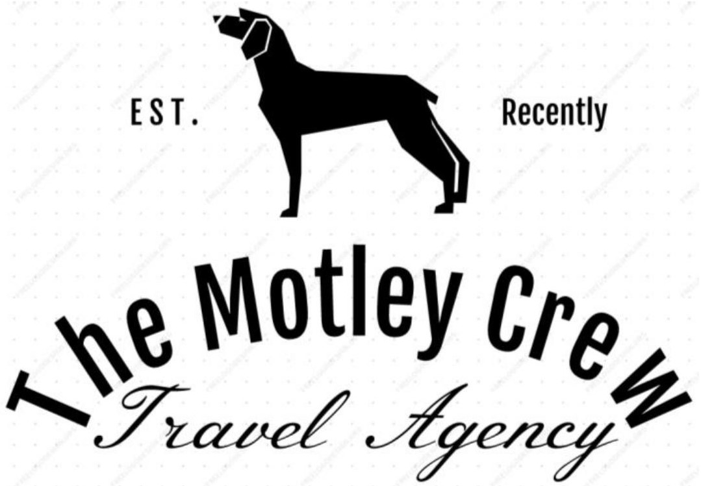
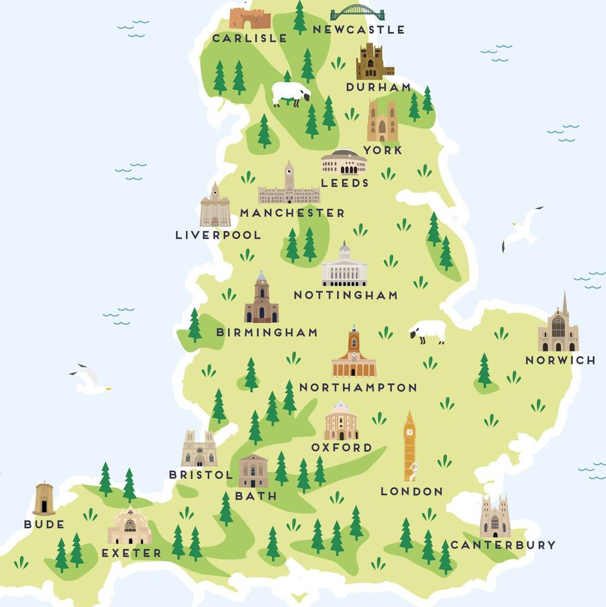

Welcome to The Motley Crew Travel Agency. We offer awesome vacations and tours at reasonable rates. Please contact our agency at 1-888-Travel for more information and rates. We guarentee the best rates in travel and will price match and beat any offer.

Welcome to the Motley Crew Tavel Agency. We offer awesome vacations and tours to various destinations around the world. We have been ofering memorbale tours and vactions for over 20 years. We offer full travel packages, hotel bookings and direct flights to all major destinations. Book your dream vacaition with the Motley Crew Travel Agency early and take advantage of our early travler specials.
One of the most popular travel destinations in the world, England offers almost endless possibilities for vacationers seeking fun things to do and see.

For vacationers seeking fun things to do and top attractions to visit, Come visit the always exciting England. England is also extremely easy to get around, with its most popular tourist destinations well connected by trains and double decker buses and a hub of activity. England has manyexciting attactions such as Stone Hedge, Tower of London, The Roman Baths and Georgian City of Bath, York Minster and Historic Yorkshire, Windsor Castle and many more. You may even get to see the Queen of England or visit her castle.
London is one of the most popular cities in the world. It has lots of destinations.
London is one of the most popular cities in the world. Its home to charming pubs, world-class (and often free) museums, tons of history, some of the best theater in the world, a diverse population, incredible food, and a wild nightlife. there is something for everyone but, in this sprawling metropolis, some main attactions of London include You could also soak up some culture at London museums, visit the Queen at Buckingham Palace, or take the perfect picture with Big Ben, just some of the many iconic places to go in London.
Manchester, city and metropolitan borough in the metropolitan county of Greater Manchester urban county, northwestern England.

Most of the city, including the historic core, is in the historic county of Lancashire, but it includes an area south of the River Mersey in the historic county of Cheshire. Manchester is the nucleus of the largest metropolitan area in the north of England, and it remains an important regional city, but it has lost the extraordinary vitality and unique influence that put it at the forefront of the Industrial Revolution. It is home to the worlds first inter-city passenger railway station and a thriving culture scene, making it one of Englands most exciting cities. Here are 25 of the best things to do in this buzzing city.
RMS Queen Mary 2 is a British transatlantic ocean liner. She has served as the flagship of Cunard Line since succeeding Queen Elizabeth 2 in 2004.

Queen Mary 2 is a remarkable flagship, and her style and elegance are legendary. Above all, it is the space she offers and the luxury for you to do as little or as much as you wish which set her apart. Queen Mary 2 is the flagship of Cunard Line. She was constructed to replace the ageing Queen Elizabeth 2, which was the Cunard flagship from 1969 to 2004 and the last major ocean liner built before Queen Mary 2. Queen Mary 2 had the Royal Mail Ship (RMS) prefix conferred on her by the Royal Mail when she entered service in 2004, as a gesture to Cunard's history.[14] Queen Mary 2 is not a steamship like many of her predecessors, but is powered primarily by four diesel engines.
Welcome to a true icon. Our flagship is a truly astonishing liner and you will find an incredible sense of freedom in the space she offers. Whether you are in the mood for complete relaxation or something more active, you can find it. Immerse yourself in enthralling entertainment, be indulged in the on board spa, or simply relax with a book in her vast library. You’ll discover remarkable craftsmanship in the elegant staterooms and suites and savoring her many sumptuous restaurants and bars is always a pleasure.
Visitors to Great Britain will find it easy to travel around England, Scotland, and Wales on the extensive and well-developed train system. Britain's train network criss-crosses the land with services to even small towns and villages with almost 20,000 train services on a typical weekday. A blend of rich history and tradition injected with modern influence, Great Britain is one of the most visited European destinations. It offers a palette of world-famous sights, museums, top nightlife, and picturesque countryside. Scotland, England and Wales are its 3 distinct countries – varied in character, yet all full of flavor. Venture off the European mainland for some time spent discovering everything that Great Britain has to offer. Come travel the sights of England by rail and enjoy the rich countryside and beautiful scenery by rail.